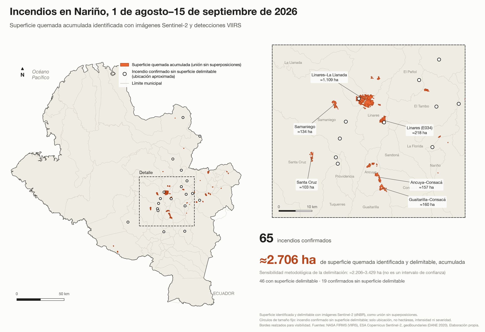
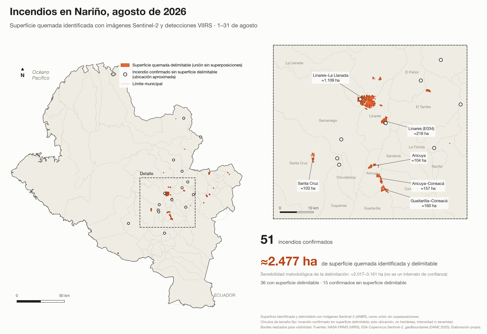
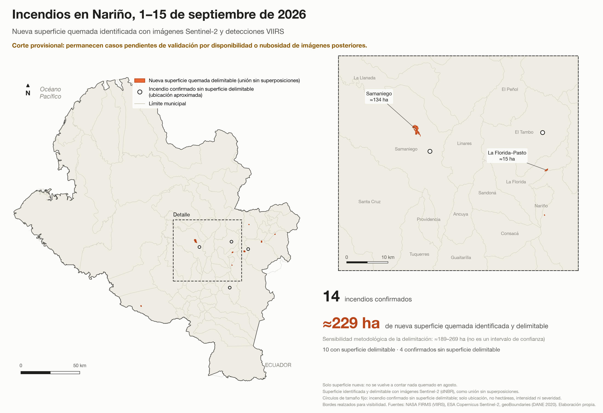

Incendios en Nariño: cerca de 2.700 hectáreas quemadas entre agosto y septiembre
Durante agosto y las primeras semanas de septiembre, los incendios volvieron a hacerse visibles en distintos puntos de Nariño. Las imágenes que circularon desde varios municipios mostraron parte de lo ocurrido, pero dejaron una pregunta por responder: ¿cuánto territorio se ha quemado en el departamento?
Por Jorge Luis Congacha
Una aproximación construida a partir de imágenes satelitales permite comenzar a dimensionarlo. Entre el 1 de agosto y el 15 de septiembre de 2026 se identificaron aproximadamente 2.706 hectáreas de superficie quemada que pudieron ser delimitadas, equivalentes a unos 27 kilómetros cuadrados.
En ese periodo se confirmaron 65 incendios mediante información satelital. En 46 casos fue posible identificar y medir con suficiente estabilidad la cicatriz dejada por el fuego; otros 19 fueron confirmados, pero su superficie no pudo delimitarse de manera confiable. Por esta razón, las 2.706 hectáreas no deben interpretarse como la totalidad de lo quemado, sino como la superficie que hasta ahora ha podido ser identificada y medida.

Una superficie equivalente a casi todo Gualmatán
Pero, ¿qué representan 2.706 hectáreas? Son aproximadamente 27 kilómetros cuadrados, una superficie superior a la extensión completa del municipio de Nariño o equivalente a cerca del 90 % del municipio de Gualmatán, cuyos territorios tienen alrededor de 25,3 y 30 kilómetros cuadrados, respectivamente.
Ahora bien, esas 2.706 hectáreas no se distribuyen por igual en el departamento. Si bien se identificaron superficies quemadas en 24 municipios, cinco concentran aproximadamente el 71 % del total. Linares registra 691 hectáreas y La Llanada 536, seguidos por Ancuya con 264, Buesaco con 256 y Los Andes con 177. El caso de Linares es particularmente importante, pues la superficie identificada como quemada equivale aproximadamente al 5,1 % de todo su territorio municipal.
Buena parte de esa concentración está relacionada con una extensa zona quemada localizada entre Linares y La Llanada, donde se identificaron aproximadamente 1.109 hectáreas. Esta zona por sí sola representa alrededor del 41 % de toda la superficie delimitada entre agosto y la primera mitad de septiembre. También se identificaron otras áreas importantes en Linares, con aproximadamente 218 hectáreas; entre Guaitarilla y Consacá, con 160; entre Ancuya y Consacá, con 157; y en Buesaco, con cerca de 141 hectáreas. Para septiembre, aunque el corte todavía es provisional, la mayor superficie identificada corresponde a Samaniego, con alrededor de 134 hectáreas.
Agosto concentró la mayor parte de la superficie quemada
Al revisar cuándo se produjeron estas afectaciones, agosto concentra la mayor parte de la superficie identificada. De las aproximadamente 2.706 hectáreas acumuladas hasta el 15 de septiembre, cerca de 2.477 corresponden a ese mes, es decir, alrededor del 91,5 % del total.
Una parte importante se concentró, además, en pocos días. Entre el 8 y el 14 de agosto se identificaron aproximadamente 1.689 hectáreas, equivalentes al 68 % de toda la superficie delimitada durante agosto.

En la primera mitad de septiembre se identificaron aproximadamente 229 hectáreas nuevas, sin volver a contabilizar las superficies que ya habían sido afectadas durante agosto. Esto representa cerca del 8,5 % de las 2.706 hectáreas acumuladas hasta el momento.
El dato de septiembre todavía es provisional. Al corte del 15 de septiembre permanecían 22 casos pendientes o indeterminados, principalmente por falta de imágenes posteriores adecuadas o por la presencia de nubosidad que impedía observar con claridad el terreno. Estos casos no fueron incluidos en la estimación mientras no existiera evidencia suficiente para confirmar y delimitar la superficie afectada, por lo que las 229 hectáreas podrían aumentar con la disponibilidad de nuevas imágenes.

El panorama adquiere especial relevancia ante las condiciones climáticas de los próximos meses. El IDEAM confirmó en septiembre la presencia de El Niño, que continúa fortaleciéndose, y estima una probabilidad superior al 90 % de que alcance una intensidad muy fuerte durante el último trimestre de 2026 y comienzos de 2027. El Instituto también ha advertido sobre un mayor riesgo de incendios de cobertura vegetal y, a mediados de septiembre, ubicó a Nariño entre los departamentos más propensos a este tipo de eventos por las altas temperaturas y la baja nubosidad.
Las cerca de 2.700 hectáreas identificadas entre agosto y la primera mitad de septiembre muestran así una parte de lo que ya ha ocurrido, mientras las condiciones asociadas a El Niño todavía continúan fortaleciéndose. De cara a los próximos meses, la pregunta ya no es solamente cuánto se ha quemado, sino qué tan preparado está Nariño para prevenir nuevos incendios y responder oportunamente cuando ocurran.
Nota metodológica
La estimación parte de las detecciones VIIRS de NASA FIRMS, que permiten localizar y fechar señales de actividad térmica asociadas a posibles incendios. Cada caso fue posteriormente revisado con imágenes Sentinel-2 tomadas antes y después del evento y, cuando fue necesario, con imágenes Landsat como referencia adicional. La superficie quemada se delimitó mediante el índice dNBR y las áreas identificadas se unieron espacialmente para evitar contabilizar más de una vez un mismo terreno cuando existían superposiciones.
La estimación tiene algunas limitaciones. La nubosidad puede impedir observar determinadas zonas, algunos incendios requieren imágenes posteriores y 19 casos confirmados no pudieron delimitarse con suficiente estabilidad. Una prueba de sensibilidad arroja valores entre 2.206 y 3.429 hectáreas al modificar los umbrales utilizados para la delimitación (no corresponde a un intervalo de confianza).
Por estas razones, las 2.706 hectáreas corresponden a la superficie quemada que pudo ser identificada y delimitada con las imágenes disponibles hasta el 15 de septiembre de 2026, y no a un cálculo definitivo de toda la superficie afectada.
Fuentes de los datos
- NASA FIRMS. Detecciones de actividad térmica del sensor VIIRS, utilizadas para localizar y fechar señales asociadas a posibles incendios.
- ESA Copernicus. Imágenes Sentinel-2 anteriores y posteriores a cada evento, con las que se delimitó la superficie quemada mediante el índice dNBR.
- Imágenes Landsat, utilizadas como referencia adicional cuando fue necesario.
- geoBoundaries (DANE 2020). Límites municipales empleados en los mapas.
- IDEAM. Confirmación de la presencia de El Niño en septiembre de 2026, probabilidad de que alcance una intensidad muy fuerte durante el último trimestre de 2026 y comienzos de 2027, y advertencias sobre el riesgo de incendios de cobertura vegetal.